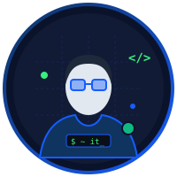

Halo, Saya Muhammad Asror
Fokus mempelajari otomasi infrastruktur menggunakan Ansible, administrasi sistem Linux, manajemen direktori terpusat dengan Active Directory, serta fondasi pengamanan jaringan. Portofolio ini merangkum lab praktik dan proyek mandiri saya.

Tentang Saya & Perjalanan Belajar
Komitmen belajar terstruktur dalam memahami dunia infrastruktur sistem, efisiensi otomasi konfigurasi, dan pengamanan hak akses data.
Latar Belakang & Fokus
Saya memulai langkah di dunia IT dengan membangun antarmuka web, lalu menyadari ketertarikan terdalam saya berada pada lapisan fondasi: bagaimana server bekerja, bagaimana jaringan saling bertukar data, dan bagaimana tugas administrasi harian dapat diotomatisasi secara aman.
Fokus saya saat ini adalah menggabungkan konsep DevOps (Infrastructure as Code dengan Ansible) dan Tata Kelola Pengguna (Active Directory & Group Policy) untuk menciptakan lingkungan server yang terstandar dan minim celah keamanan.
Alasan Menyukai Bidang IT
Perjalanan Tahap Belajar IT
Keahlian & Perangkat (Tools)
Tingkat penguasaan teknis berbasis hands-on project dan konfigurasi lab mandiri.
Koleksi Proyek & Lab Praktik
Hasil eksplorasi implementasi sistem nyata: otomatisasi server, keamanan direktori, serta utilitas CLI.
Sertifikat & Pencapaian Teknis
Dokumentasi kelulusan kursus dan ujian kompetensi terverifikasi. Klik kartu sertifikat untuk melihat tampilan resolusi penuh.
Catatan Belajar & Dokumentasi IT
Ringkasan konsep teknis, catatan pemecahan masalah (troubleshooting), dan referensi lab yang saya tulis selama proses belajar.
Hubungi Saya
Punya saran lab, pertanyaan tentang proyek, atau peluang magang/kolaborasi IT? Jangan ragu mengirim pesan.
Saluran Komunikasi Langsung
Pilih platform yang paling nyaman untuk Anda. Saya aktif memeriksa surel dan pesan WhatsApp setiap hari kerja.